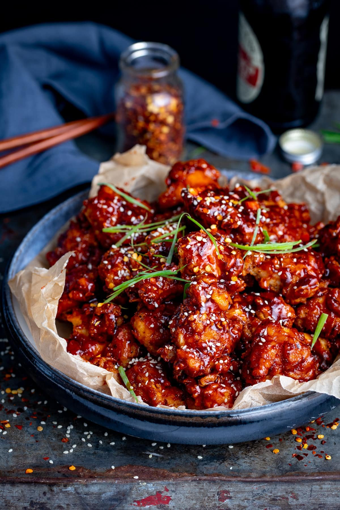

Korean fried chicken

This delicious, well-known Korean recipe is loved by many. It can be altered to taste
- 20 vleugeltjes
- 3 tenen knoflook
- peper en zout
- 1 ei
- 60 gram bloem
- 30 gram rijstbloem
- Meng de kip met de knoflook, peper en zout. Laat ten minste 30 minuten marineren.
- Meng het ei door de kip.
- Verwarm de frituur op 160 graden